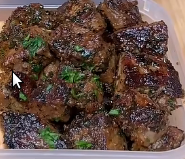

Steak Bites
Home

Description
Garlicy and buttery diced steak that is golden and cripsy!
Ingredients
- 800g Raw Topside/Top Round Beef Steak
- 1.5 tsp Salt
- 2 tsp Black Pepper
- 2 tsp Garlic Powder
- 2 tsp Parsley
- 1 tsp Chilli Powder
- 2 tsp Olive Oil
- 40g Light Butter
- OPTIONAL: Minced Garlic, Fresh Parsley
Steps
- Slice your steak into cubes.
- Season with salt, black pepper, garlic powder, parsley, chilli powder, and olive oil.
- Mix until the color changes.
- Cook steak bites in light butter on med heat for 3 minutes on each side until golden and cripsy.
- OPTIONAL: Add more light butter, minced garlic, fresh parsley, and mix.